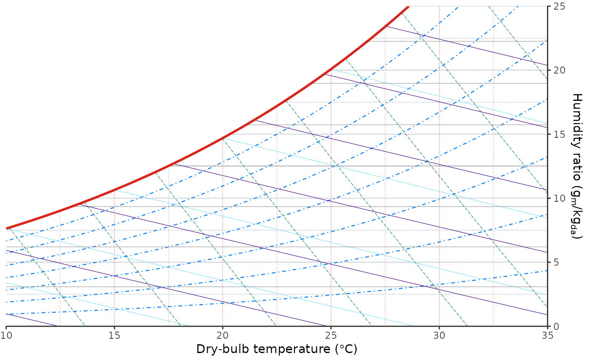
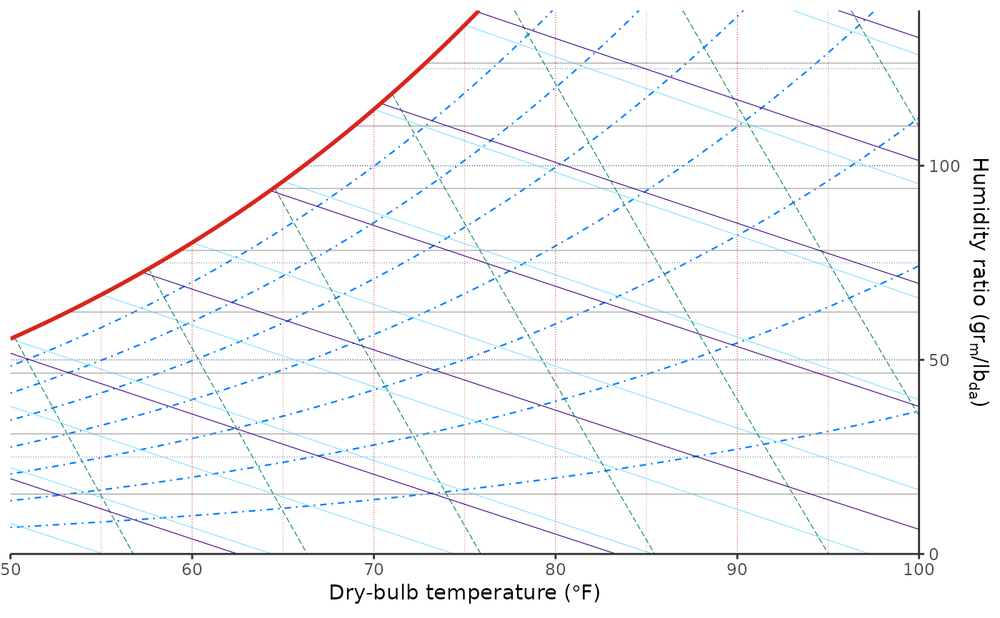
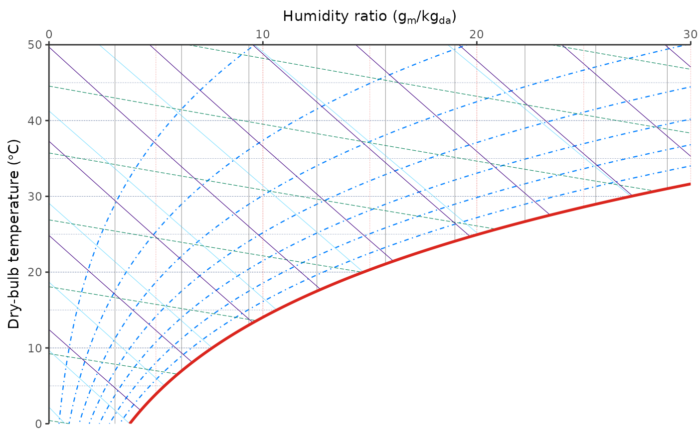

Psychrometric coordinates
Usage
coord_psychro(
tdb_lim = NULL,
hum_lim = NULL,
altitude = NULL,
units = NULL,
mollier = NULL,
expand = FALSE,
default = TRUE,
clip = "on"
)Arguments
- tdb_lim
A numeric vector of length-2 indicating the dry-bulb temperature limits. Should be in range
[-50, 100]degree_C [SI] or[-58, 212]degree_F [IP]. IfNULL, trained data ranges will be used when available, otherwise a default display range will be used. Default:NULL.- hum_lim
A numeric vector of length-2 indicating the humidity ratio limits. Should be in range
[0, 60]g_H20 kg_Air-1 [SI] or[0, 350]gr_H20 lb_Air-1 [IP]. IfNULL, trained data ranges will be used when available, otherwise a default display range will be used. Default:NULL.- altitude
A single number of altitude in m [SI] or ft [IP]. Default:
0.- units
A string indicating the system of units chosen. Should be either
"SI"or"IP".- mollier
If
TRUE, a Mollier chart will be created instead of a psychrometric chart. Default:FALSE.- expand
If
TRUE, the default, adds a small expansion factor to the limits to ensure that data and axes don't overlap. IfFALSE, limits are taken exactly from the data orxlim/ylim. Giving a logical vector will separately control the expansion for the four directions (top, left, bottom and right). Theexpandargument will be recycled to length 4 if necessary. Alternatively, can be a named logical vector to control a single direction, e.g.expand = c(bottom = FALSE).- default
Is this the default coordinate system? If
FALSE(the default), then replacing this coordinate system with another one creates a message alerting the user that the coordinate system is being replaced. IfTRUE, that warning is suppressed.- clip
Should drawing be clipped to the extent of the plot panel? A setting of
"on"(the default) means yes, and a setting of"off"means no. In most cases, the default of"on"should not be changed, as settingclip = "off"can cause unexpected results. It allows drawing of data points anywhere on the plot, including in the plot margins. If limits are set viaxlimandylimand some data points fall outside those limits, then those data points may show up in places such as the axes, the legend, the plot title, or the plot margins.
Examples
ggpsychro() +
coord_psychro(tdb_lim = c(10, 35), hum_lim = c(0, 25))

ggpsychro(units = "IP", altitude = 1000) +
coord_psychro(
tdb_lim = c(50, 100),
hum_lim = c(0, 140),
units = "IP",
altitude = 1000
)

ggpsychro(mollier = TRUE) +
coord_psychro(
tdb_lim = c(0, 50),
hum_lim = c(0, 30),
mollier = TRUE
)
